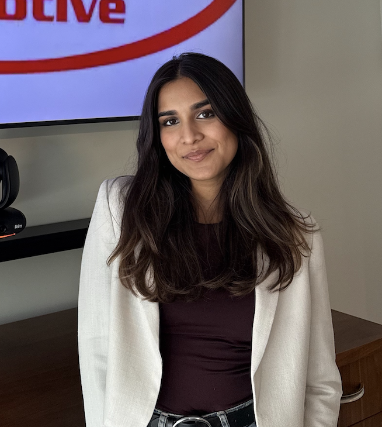

Hi, my name is
Brinda Laddha.
I turn messy data into decisions people can act on.
MSBA candidate and Statistics graduate with cross-functional experience in marketing strategy, data analysis, and venture capital research — from improving automotive inventory allocation to structuring due-diligence frameworks that supported $2M+ in investment decisions.

01.
About
I'm a Master of Science in Business Analytics candidate at Wake Forest University School of Business, graduating May 2027, with a Bachelor of Arts in Statistics and a minor in Marketing Communication. I like problems that sit at the intersection of numbers and people — where a dataset needs to become a recommendation someone can actually use.
My experience spans marketing strategy at an early-stage startup, inventory and UX analytics for a Fortune 500 auto retailer, and investment research for a venture capital firm. I'm skilled in Python, R, and Excel, and I care as much about the stakeholder conversation as I do about the model — honed through client-facing case work, pitch development for founders, and senior-leadership reporting.
Areas of expertise
Tools I use
02.
Education
Master of Science in Business Analytics
Wake Forest University School of Business · Winston-Salem, NC
May 2027
Bachelor of Arts in Statistics, Minor in Marketing Communication
Wake Forest University · Winston-Salem, NC
May 2026
Summer School — Marketing
London School of Economics
August 2025
Arangetram in Kathak
Bachelor's-equivalent certification in North Indian Classical Dance
Certification
03.
Experience
04.
Selected Projects
05.
Academic Writing & Research
Earlier research and coursework (IB Diploma, 2023, and first-year college work, 2023–2024) that shaped how I approach evidence, argument, and analysis today.
06.
Leadership & Activities
07.
Get In Touch
I'm open to business analyst, strategy, and analytics roles, as well as thoughtful conversations about data, marketing, and venture research. My inbox is always open.
Say hello